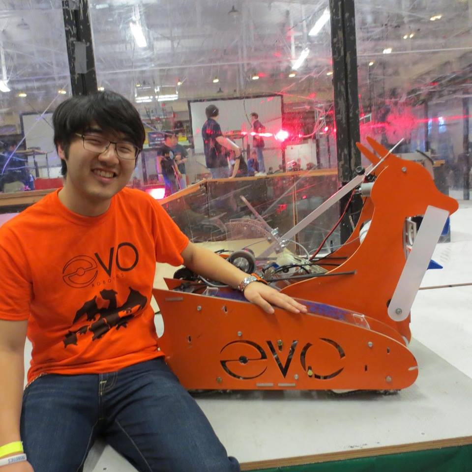

I pride myself on being very breadth-focused within the realm of robotics, having worked with mechanical, electrical, and software systems. In high school I fell in love with building robots. I participated in the FIRST Robotics Competition (FRC Team 2022), and focused on building my skills in mechanical design. My focus shifted in undergrad (UIUC) to electrical and computer systems, tailoring my coursework to be related to the robotics field, but also finding the time to get my hands dirty in the machine shop. Currently, I am pursuing my Masters in Robotic Systems Development at CMU expanding my knowledge on robotic planning and machine learning.
I went to my first concert in 2010 seeing Green Day at Lollapalooza. Since then, I've continued to enjoy going to punk shows, and I've even dabbled in playing guitar myself.